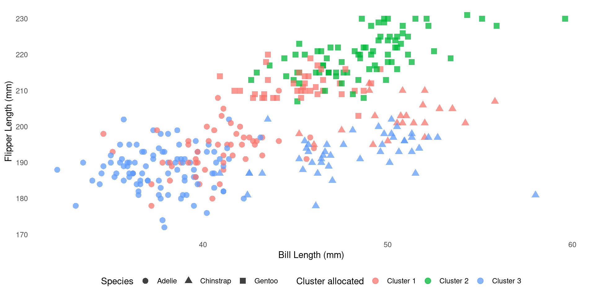
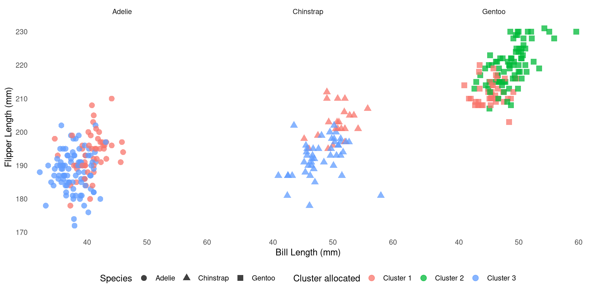

🗓️ Week 07:
Unsupervised Learning
Clustering
11/11/22
Recall the Supervised Learning approach
Example of Supervised Models
From 🗓️ Week 02:
The generic supervised model:
\[ Y = \operatorname{f}(X) + \epsilon \]
is defined more explicitly according to each algorithm ➡️
Multiple Linear Regression
\[ \begin{align} Y = \beta_0 &+ \beta_1 X_1 + \beta_2 X_2 \\ &+ \dots \\ &+ \beta_p X_p + \epsilon \end{align} \]
when there are multiple predictors, \(X_p\).
Multiple Logistic Regression
\[ \begin{align} Y \propto p(X) &= \\ &= \frac{e^{\beta_0 + \beta_1 X_1 + \ldots + \beta_p X_p}}{1 + e^{\beta_0 + \beta_1 X_1 + \ldots + \beta_p X_p}} \end{align} \]
when there are multiple predictors, \(X_p\).
Unsupervised Learning
How is it different?
Supervised Learning
- Our main goal is to predict future values of \(Y\)
- We have historic \(X\) and \(Y\) data
- Algorithms fit the data and supervise themselves objectively (e.g.: residuals)
- We can validate how well the model fits training data and how it generalises beyond that.
Unsupervised Learning
- The main goal is to observe (dis-)similarities in \(X\)
- We only have \(X\) data
- There is no \(Y\) variable to “supervise” how models should fit the data
- Validation is a lot more subjective. There is no objective way to check our work.
Clustering
Why clustering?
- Are there clusters (subgroups) in my data?
- Which samples are most similar to each other?
- Are there samples that do not fall in any subgroup?
Each algorithm is different

An Example:
- Let’s use the 🐧 penguins data to illustrate clustering
- Same data used in 💻 Week 07 - Lab
🐧 penguins data
Code
# A tibble: 15 × 5
species bill_length_mm bill_depth_mm flipper_length_mm body_mass_g
<fct> <dbl> <dbl> <int> <int>
1 Adelie 39.1 18.7 181 3750
2 Adelie 39.5 17.4 186 3800
3 Adelie 40.3 18 195 3250
4 Adelie 36.7 19.3 193 3450
5 Adelie 39.3 20.6 190 3650
6 Adelie 38.9 17.8 181 3625
7 Adelie 39.2 19.6 195 4675
8 Adelie 41.1 17.6 182 3200
9 Adelie 38.6 21.2 191 3800
10 Adelie 34.6 21.1 198 4400
11 Adelie 36.6 17.8 185 3700
12 Adelie 38.7 19 195 3450
13 Adelie 42.5 20.7 197 4500
14 Adelie 34.4 18.4 184 3325
15 Adelie 46 21.5 194 4200Correlation plot
It is easy to distinguish the species using colour because we have a species column:
Source Code
Tip
- Use the code below to replicate the plot from the previous slide.
- Found a bug? Report it on Slack.
library(GGally) # pretty correlation plots
library(tidyverse) # to use things like the pipe (%>%), mutate and if_else
library(palmerpenguins) # for penguin data
penguins_cleaned <-
penguins %>%
na.omit() %>%
select(species, where(is.numeric), - year)
# View(penguins_cleaned) or do head(penguins_cleaned)
g <-
ggpairs(penguins_cleaned,
aes(colour = species, fill = species, alpha = 0.875),
columns = 2:5,
upper = list(continuous = 'blankDiag')) +
theme_minimal() +
theme(panel.grid.minor = element_blank()) +
scale_colour_viridis_d() +
scale_fill_viridis_d() +
labs(colour = 'Species', fill = 'Species')
gPenguins data without the species
What if we did not have the species column?
# A tibble: 15 × 4
bill_length_mm bill_depth_mm flipper_length_mm body_mass_g
<dbl> <dbl> <int> <int>
1 39.1 18.7 181 3750
2 39.5 17.4 186 3800
3 40.3 18 195 3250
4 36.7 19.3 193 3450
5 39.3 20.6 190 3650
6 38.9 17.8 181 3625
7 39.2 19.6 195 4675
8 41.1 17.6 182 3200
9 38.6 21.2 191 3800
10 34.6 21.1 198 4400
11 36.6 17.8 185 3700
12 38.7 19 195 3450
13 42.5 20.7 197 4500
14 34.4 18.4 184 3325
15 46 21.5 194 4200K-Means Clustering
Objective function:
Find a partition \(C_1 \cup C_2 \cup C_3 \cup \ldots \cup C_K = \{1, \ldots, n\}\) for the data such that: \[ \text{minimize}_{C_1, \ldots, C_K} \left\{ \sum_{k=1}^{K}{\frac{1}{|C_k|} \sum_{i,i' \in C_k}{\sum_{j=1}^p{(x_{ij} - x_{i'j})^2}} }\right\} \]
K-Means algorithm
Step by step of one clustering algorithm:
- You have to inform \(K\), the number of clusters you wish to recover
- The algorithm randomly assign each observation to a random cluster
- Iterate until cluster assignments stop changing
- For each of the \(K\) clusters, compute the cluster centroid
- Re-assign samples to their closest centroid (euclidean distance)
Clustering Penguins
K-means clustering with 3 clusters of sizes 113, 80, 140
Cluster means:
bill_length_mm bill_depth_mm flipper_length_mm body_mass_g
1 44.24336 17.44779 201.5487 4310.619
2 48.66250 15.39750 219.9875 5365.938
3 41.12214 17.94643 189.6286 3461.250
Clustering vector:
[1] 3 3 3 3 3 3 1 3 3 1 3 3 1 3 1 3 3 3 1 3 3 3 3 3 1 3 1 3 1 3 1 1 3 3 1 3 1
[38] 3 1 3 1 3 3 1 3 1 3 1 3 3 3 3 3 3 3 1 3 1 3 1 3 1 3 1 3 1 3 1 3 1 3 1 3 1
[75] 3 1 3 1 3 3 3 3 1 3 3 1 3 1 3 1 3 1 3 1 3 1 3 1 3 3 3 1 3 1 3 1 3 1 1 1 3
[112] 3 3 3 3 3 3 3 3 1 3 1 3 1 3 3 3 1 3 1 3 1 3 1 3 3 3 3 3 3 1 3 3 3 3 1 1 2
[149] 1 2 2 1 1 2 1 2 1 2 1 2 1 2 1 2 1 2 2 2 1 2 2 2 2 1 2 2 1 2 2 2 2 2 2 1 2
[186] 1 2 1 1 2 2 1 2 2 2 2 2 1 2 2 2 1 2 1 2 1 2 1 2 1 2 2 1 2 1 2 2 2 1 2 1 2
[223] 1 2 1 2 1 2 1 2 1 2 2 2 2 2 1 2 2 2 2 2 1 2 2 2 2 2 2 1 2 1 2 2 2 1 2 1 2
[260] 2 2 2 2 2 2 3 1 3 3 3 1 3 3 1 3 3 3 3 1 3 1 3 3 3 1 3 3 3 3 3 1 3 3 3 1 3
[297] 1 3 1 3 1 3 1 3 1 1 3 3 3 3 1 3 1 3 3 3 1 3 1 3 3 3 1 3 3 1 3 3 1 3 3 1 3
Within cluster sum of squares by cluster:
[1] 9318036 9718829 9724809
(between_SS / total_SS = 86.6 %)
Available components:
[1] "cluster" "centers" "totss" "withinss" "tot.withinss"
[6] "betweenss" "size" "iter" "ifault" Inspect the centroids
How does it compare to the real one?
We can cross-tabulate species and cluster membership:
Visual comparison
Visual comparison
What’s Next
- Next week, Week 08, the labs will be about SVM & cross-validation
- Revisit 🗓️ Week 05 lecture
- Read “The cross-validation setup” section in Week 04 page
- You will explore k-means clustering in Week 09 labs
References

DS202 - Data Science for Social Scientists 🤖 🤹